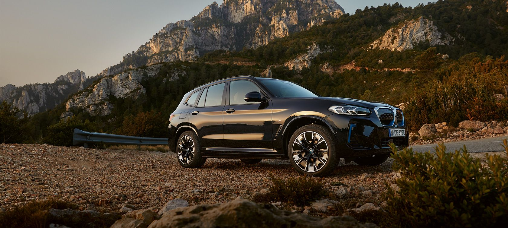

|  | ||||
| Yakıt Tipi | Güç | Menzil | 0-100KM | |
| Tamamen Elektrikli | 163 bg | 460 Km | h:10.1sn | |
Yeni tasarımıyla standart özellik olarak sunulan Sport donanımı sayesinde BMW iX3 her zamankinden daha sportif görünüyor. Aerodinamik öğeler ve mavi vurgular otomobilin elektrikli doğasını tüm etkisiyle gözler önüne seriyor. Yolculuklarınız ister kısa ister uzun olsun, BMW iX3, 460 kilometreye varan menzili ve 18,5 kWsa/100 km elektrik tüketimiyle her rotaya uygun. BMW iX3: -kWsa/100 km'de güç tüketimi: 18,9 - 18.5 -CO2 emisyonu (g/km) (ortalama): 0,0


| İLETİŞİM & DESTEK | HIZLI ERİŞİM |
| İletişim | Model Listesi |
| Geri Dönüşüm | Kataloglar |
| Gönüllü Geri Çağırma | Ayın Özel Teklifleri |